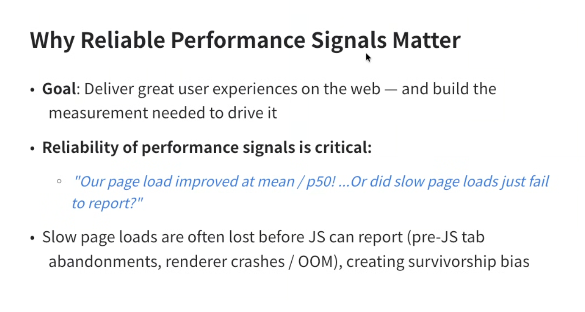
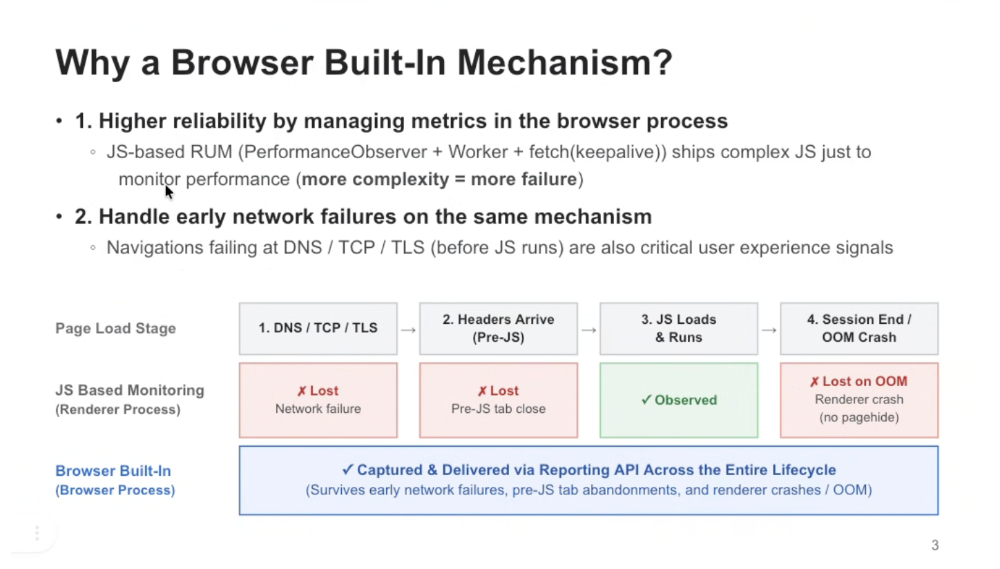
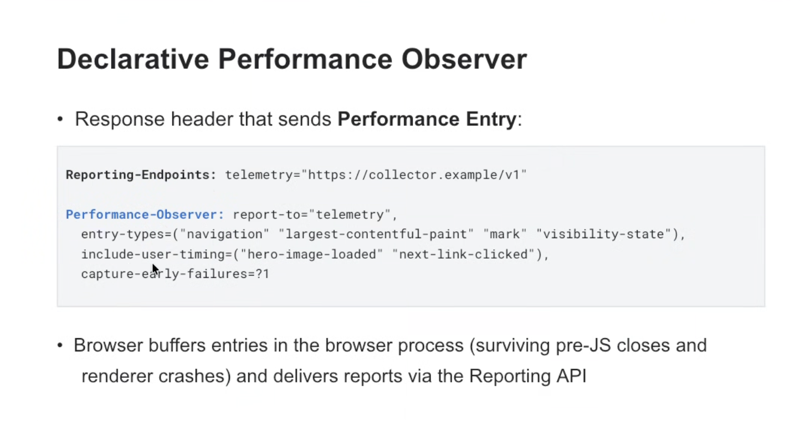
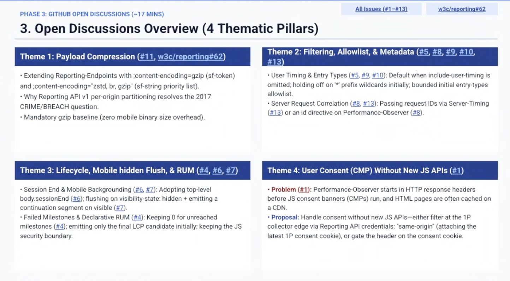

Participants
- Yoav Weiss, Nic Jansma, Guohui Deng, Noam Helfman, Patrick Meenan, Michal Mocny, Matt Kubej, Thomas Bertet, Barry Pollard, Mike Henniger, Shunya Shishido, Ben Kelly, Alex Christensen, Scott Haseley
Admin
- SKIPPING November 19th
- Next meeting: December 3rd (early time slot / 11am EST)
- Call for Consensus for Layout Instability
Minutes
Declarative Performance Observer - Shunya
- Shunya:

height: 758.00px; margin-left: 0.00px; margin-top: 0.00px; transform: rotate(0.00rad) translateZ(0px); -webkit-transform: rotate(0.00rad) translateZ(0px);" title="">- ... We need to build this into the browser, rather than including complex JavaScript
- ... Some blind-spots not available from client platform (pre-javascript, or when sessions end/crash)

height: 824.00px; margin-left: 0.00px; margin-top: 0.00px; transform: rotate(0.00rad) translateZ(0px); -webkit-transform: rotate(0.00rad) translateZ(0px);" title="">- ... Declarative Performance Observer is a HTTP response header

height: 762.00px; margin-left: 0.00px; margin-top: 0.00px; transform: rotate(0.00rad) translateZ(0px); -webkit-transform: rotate(0.00rad) translateZ(0px);" title="">- ... Open issues

height: 798.00px; margin-left: 0.00px; margin-top: 0.00px; transform: rotate(0.00rad) translateZ(0px); -webkit-transform: rotate(0.00rad) translateZ(0px);" title="">- ... Theme 1 on data compression
- ... From Origin Trial feedback, partner raised concern that payload is becoming too large, may exceed threshold
- ... Reporting API itself doesn't have functionality to compress, would like Content-Encoding mechanism on Reporting API standardized
- Michal: Theme 2, is it really needed to have filtering and allow-listing and rules, risks of header parsing and rules and getting it wrong
- ... Raised question if DPO only reported those entries which are buffered by Performance Timeline
- ... Have a mechanism to cap how many are into buffer, can we use the same?
- ... If we're buffering too many entries that are low-value, let's change that
- ... If you've exhausted each entry max buffer size it's still fit in the declared buffer (640kb)
- ... Even if all RT was there, the only one that could exceed is UserTiming
- ... How many clients would choose to take a subset of PerformanceTimeline if they had to do so?
- Shunya: What if there are 500+ resources and they're only interested in navigation event?
- ... Then 90% of reporting payload is wasted for users
- NoamH: Filtering can be useful if payload is so large, even with compression, or just want to reduce amount of telemetry going through
- ... With JS profiler we ran into this, and wrote some code to filter data uploaded, too much data
- ... Having some mechanism would be useful in some scenarios
- ... Question on overlap with Reporting API? OOM case, crashes
- ... Some overlap here
- ... Augment, combine, complement each other?
- Shunya: haven’t looked at it in detail
- NoamH: provides crash info, stack traces, and additional context information.
- Yoav: Where's the overlap?
- NoamH: With crashes, there would be two mechanisms to track
- ... This API is more comprehensive, but does miss context information and stack trace
- ... If that was included with this API, we could just use it
- Shunya: Don't intend to replace crash reporting API
- ... Capture performance events, not OOM
- Nic: in a previous slide you showed the parts missing from JS that included OOM
- NoamH: Also unresponsive. This API captured more data related to these. Maybe opportunity to combine
- Michal: up until now there was no mechanism to catch crashes. Now we have a mechanism, so we could create a performance entry “crash-report” that would be included here. Is that what you’re asking for?
- NoamH: Sounds good, would simplify a lot of processes. Joining crashes with other telemetry is hard and this could make it simpler
- Nic: Difference from Crash Reporting API?
- Yoav: Combined with this, you can get the context and other data
- ... I think that filters are useful, one extra filter could be timestamp cardinality (how coarse should timestamps be?)
- ... Could reduce payload if you're compressing it
- ... Improve buffering, could be orthogonal, would have back-compat implications
- ... Theme 4, talking about a cookie name that would not send anything until a cookie or other signal was sent
- ... gzip can be used, but brotli and compression API are shipped, so overhead has been paid
- ... Use any of those or zstd
- ... Negotiation, having server opt-in makes sense
- Michal: Theme 3 lifecycle
- ... Decrease in reporting rates if waiting for app unload (hidden/pagehide)
- ... Best practice in beacon and RUM solutions is to beacon on visibilitychange
- ... Tab may be re-foregrounded, beacon sent when tab is hidden, increases reporting rates, do you do tracking after visible again
- ... First time where PerformanceTimeline where it would have to make an opinion
- ... Slice PerformanceTimeline by navigations, should we do soft navs + visibility changes?
- ... Affects payload sizes
- ... All are nicely related
- Shunya: Regarding tab switching / backgrounding
- ... As long as the document is alive, we should provide some way to send the events until the document unloads
- ... Not sure what mechanism has other security or privacy implications
- Michal: Direction seems to be prefer slicing, rather than grouping
- ... When navigate away and freeze tab for bfcache, come back, you're on the same PerformanceTimeline, but most folks would consider that a new navigation
- ... Similar for background, likely to come back much later
- Shunya: BFCache experiment, we explicitly flush events at BFCache
- Yoav: This could be another knob, when do they want these reports to be sent out?
- ... If we really want people to use this instead of JavaScript, we may need to provide a few popular options here
- NoamH: Send on hide?
- Yoav: Yes, something like that
- Michal: I would like to see a first-class slicing mechanism for PT, with distinct buffers, for any type of navigation. May take a while to get there, but this could build on top of that.
- Matt: For filters, maybe there's opt-in heuristics where you'd request to be sliced in some way or buffers to be flushed
- ... Not necessarily one-size-fits-all, consumers can express how they want to receive the data
- Nic: Any possibility to have multiple headers that register multiple headers going to different endpoints?
- … seen challenge with reporting where e.g. both origin and CDN want reporting
- Shunya: Not sure how many endpoints can be registered
- Nic: Can we have multiple headers pointing to different endpoints
- Barry: by default that would merge into a single header. Need to consider it
- Nic: We’ve hit these issues
- Barry: Need to consider how we handle this
Resource Timing Initiator - Gouhui
- Guohui: Reached 100% of coverage for what was originally planned
- ... Status update
- ... initiatorUrl in ResourceTiming, tells which resource this current resource is initiated from (points to parent in dependency tree)
- ... Page has HTML, has a static resource, the resource points to the HTML
- ... There could be hundreds of cases here, we don't plan on 100% coverage
- ... Not sure of the difficultly in other browsers
- ... We cover: Resource in HTML markup, static resources
- ... Common JavaScript cases
- ... Document lists all major categories, and how initiatorUrl is determined
- ... Also links to WPT test
- ... HTML, CSS, JavaScript, Workers, Modules
- ... Another initiator that's available in Dev Tools
- ... This has more coverage, includes Workers and modules
- ... Resources requested by JavaScript. DevTools only report stack.
- ... Very common that fetch is done async, and is not reported in debugging tools
- ... We can report it here
- ... Uses Task Attribution to track the initiator
- ... Carries information of initiator, saying who is responsible for current execution
- ... Will be reported as initiator here
- ... Started when JS is loaded and executed, JS URL becomes initiator here
- ... When sync call, attribution is propagated
- ... setTimeout(), when callback fires, the initiator is restored, so we know who set the setTimeout()
- ... Most cases are straightforward, but there's one thing tricky
- ... Simple rule: Who setup sync call is responsible. Whoever setup setTimeout() is initiator for the callback
- ... For event handler and message handler, there's another candidate
- ... The creator of the handler could be the candidate of the initiator
- ... Some performance overhead, working through that
- ... We try to only report one initiator instead of 2
- ... Two candidates: Who registered the callback, second is who triggered the event/message
- ... Implementation is: In all cases, initiator is JavaScript who registered the callback
- ... Message hander, event handler, initiator is whoever called addEventListener
- ... Some may not have an initiator, because they come from user action
- ... Some reasons initiatorUrl could be empty
- ... No initiator, resource was not fetched from the network, browser does not report for that type of request
- ... Want to start an Origin Trial, once I fix the performance overhead
- Michal: Played around with this, very useful and interesting.
- ... Want to understand state of decisions made
- ... Interaction Contentful Paint (ICP) project
- ... Same problem, went other direction (caller vs. register semantics)
- ... If a user clicks a button, they don't care as much which script registered, they care about net effect that happened to the page
- ... We propagated the interaction
- ... That's not the decision the async context project is using, it's more of a developer-focused perspective
- ... Developer wants to know how feature propagates through work
- ... Is this 100% aligned with async context variable decisions
- Guohui: Might choose same direction
- Scott: Decision on events is different. Aligned with Async Context for callbacks, promises, etc. But chose registration semantics for events.
- ... Key difference here
- ... We'll override whatever decision Async Context has made for events
- ... Setting up a Context at a layer above that, even before handler fires
- ... This is inside
- Yoav: Given use-case here is to be able to construct a resource-dependency tree
- ... The thing that loaded the resource is the script that loaded it, rather than what triggered it
- ... From my perspective, registration semantics here makes sense
- ... Ideally we'd build Async Context as unopinionated infrastructure that could go either way, depending on what builds on it.
- Michal: Infrastructure that powers the developer API could have that flexibility, but current doesn't have flexibility
- Scott: You could do this as a developer, hack around this is overriding aEL, but could make that easier to do
- ... Harder thing is determining causality for all of the events
- ... Makes sense using event listener who added it in this case
- Yoav: From Origin Trial, I'd love to be able to play with this
- Michal: For events, does that include custom events inside of libraries?
- ... It's not that common, but if I have a library that adds aEL, no different than calling a function in my library, you'd want the caller of the function rather than the definier
- ... For jQuery, you don't want jQuery to be initiator, you want library that added it
- ... For browser events it makes sense, that's the best choice
- ... Not sure if you differentiate those two use-cases
- Guohui: Initiator could be framework who setup a callback
- Michal: A use-case where if there was a propagating interaction, library restore snapshot, we'd take it, otherwise we'd override
- ... If aEL, there is no context, fallback to registrar of the event listener for those common cases. Otherwise if you did have it, you'd use the caller.
- Scott: Next steps is OT, folks using frameworks to see what this looks like, great information